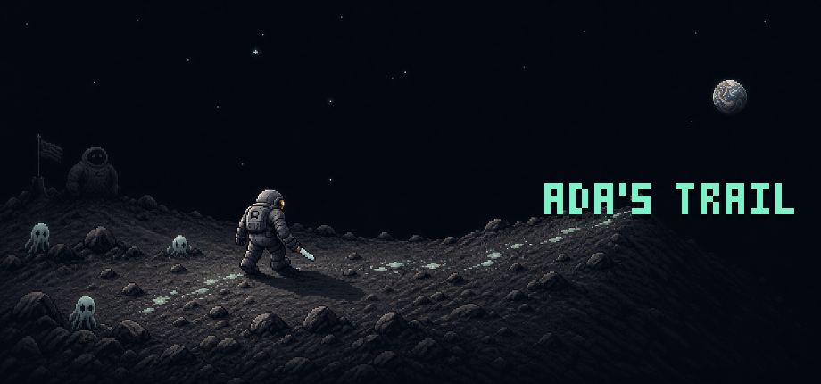

ABOUT THIS GAME
Ada went out for a midnight walk and never came home. The trail leaves Earth, crosses the Moon, and keeps going.
YOU STEER. YOUR BUILD FIGHTS.
Ada's Trail is a top-down survival shooter about positioning, pressure, and the gear you trust your life to. Your hero automatically uses equipped weapons and powers. Read the horde, spend your sprint, and know when holding your ground has become a bad idea.

BUILD FROM WHAT SURVIVES THE FIGHT.
Weapons, armor, charms, consumables, and named relics spill from the horde. Every item has its own level, quality, and rolled bonuses. Carry a softcore hero through five hostile worlds and a hidden detour—or give a hardcore hero one life for the whole search.
SEARCH ALONE OR BRING SEVEN FRIENDS.
Host an online run through Steam lobbies and invites. Fight, revive, and share the field together. There is no automatic public matchmaking: one player hosts and friends join that run. Solo play works fully offline.
SYSTEM REQUIREMENTS
MINIMUM
OS: Windows 10, 64-bit
Processor: Dual-core 2.0 GHz
Memory: 4 GB RAM
Graphics: WebGL 2 capable
Storage: 1 GB
RECOMMENDED
OS: Windows 11, 64-bit
Processor: Quad-core 2.5 GHz
Memory: 8 GB RAM
Graphics: Recent integrated or dedicated GPU
Storage: 1 GB
Native Windows, macOS, and Linux depots are planned. Requirements remain provisional until release-build QA.